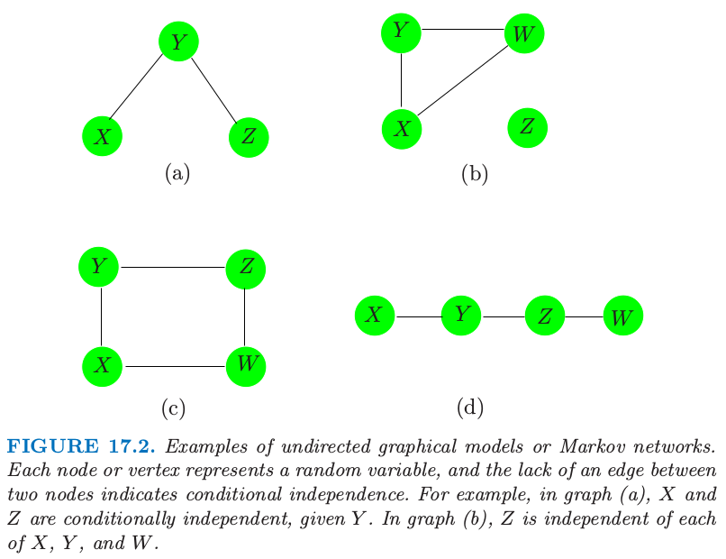
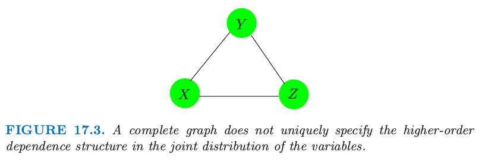

17.2 马尔科夫图及其性质
17.2 马尔科夫图及其性质¶
这部分我们讨论图作为随机变量集的联合分布的模型的基本性质。我们将下面两部分的讨论放在后面的章节中，其中一部分是 (a) 根据数据对边的参数的估计和参量化，另一部分是 (b) 估计图的拓扑结构。
图 17.2 显示了无向图的四个例子。图 \(\mathbb{G}\) 包含数据对 \((V,E)\)，其中 \(V\) 是顶点的集合，\(E\) 为边的集合（用顶点对定义）。对于两个结点 \(X\) 和 \(Y\)，如果存在一条边将它们连起来，则这两个结点称为 邻接 (adjacent)，记做 \(X\sim Y\)。路径 (path) \(X_1,X_2,\ldots, X_n\) 是相连的顶点集，也就是 \(X_{i-1}\sim X_i,i=2,\ldots,n\)。完全图 (complete graph) 是每个顶点对都被一条边相连的图。子图 (subgraph) \(U\in V\) 是顶点集及其边的子集。举个例子，图 17.2(a) 的 \((X,Y,Z)\) 构成路径但不是完全图。

图 17.2. 无向图模型或者马尔科夫网络的例子。每个结点或顶点表示一个随机变量，两个结点之间缺失边表示条件独立。举个例子，在图 (a) 中，在给定 \(Y\) 的情况下，\(X\) 和 \(Z\) 是独立的。在图 (b) 中，\(Z\) 与 \(X,Y,W\) 中的每一个都是独立的。
假设我们有图 \(\mathbb{G}\)，它的顶点集合 \(V\) 表示联合分布为 \(P\) 的随机变量集。在马尔科夫图 \(\mathbb{G}\) 中，某条边的缺失表示在给定其他结点的变量时，对应的随机变量是条件独立的。这可以用下面的记号来表示：
其中 “rest” 表示图中所有的其他结点。举个例子，在图 17.2 (a) 中 \(X\bot Z\mid Y\)。这也称作 \(\mathbb{G}\) 的 逐对马尔科夫独立 (pairwise Markov independencies)。
如果 \(A,B\) 和 \(C\) 为子图，且若 \(A\) 和 \(B\) 的任一路径都交于 \(C\) 中的结点，则称 \(C\) 分离 (separate) \(A\) 和 \(B\)。举个例子，\(Y\) 分离图 17.2 (a) 和 (d) 的 \(X\) 和 \(Z\)，并且 \(Z\) 分离 (d) 中的 \(Y\) 和 \(W\)。图 17.2 (b) 的 \(Z\) 与 \(X,Y,W\) 不相连，则我们称这两个集合被空集分离。在图 17.2 (c) 中，\(C=\{X,Z\}\) 分离 \(Y\) 和 \(W\)。
分离集有良好的性质，它们将图分解成条件独立的部分。特别地，在含有 \(A,B\) 和 \(C\) 子图的图 \(\mathbb{G}\)，
这称作 \(\mathbb{G}\) 的 全局马尔科夫性质 (global Markov properties)。事实上，图的 逐对马尔科夫性质 (pairwise Markov properties) 和 整体马尔科夫性质 (global Markov properties) 是等价的（对于有正分布的图）。也就是，相关概率分布 (associated probability distribution) 满足逐对马尔科夫独立性和全局马尔科夫假设的图的集合是相同的。这个结果对于从简单成对性质中推断整体独立关系是很有用的。举个例子，在图 17.2 (d) 中 \(X\bot Z\mid\\{Y,W\\}\)，因为这是一个马尔科夫图，且 \(X\) 和 \(Z\) 之间没有连接。但是 \(Y\) 也将 \(X\) 从 \(Z\) 和 \(W\) 中分离，因此由整体马尔科夫假设我们得出 \(X\bot Z\mid Y\) 和 \(X\bot W\mid Y\)。类似地，我们有 \(Y\bot W\mid Z\)。
note “weiya 注：三种等价的 Markov 性质” pairwise Markov properties: 对于所有的非邻接顶点 \(i\) 和 \(j\)，\(a\) 为剩余结点的集合，则 \(X_i\ind X_j\mid X_a\)，
global Markov properties: 对于所有的不相交的子集 $a$, $b$ 和 $c$，若 $a$ 分离 $b$ 和 $c$，则 $X_b\ind X_c\mid X_a$，
local Markov properties: 对于每个顶点 $i$，$a=\mathrm{bd}(i)$ 是边界集，$b$ 为剩余结点的集合，则 $X_i\ind X_b\mid X_a$。
全局马尔科夫性质允许我们将图分解成更小的易控制的片段，因此在计算和解释性上有本质上的简化。基于这个目的，我们将图分解成 团 (clique)。团是一个完全子图——所有顶点都与其他点邻接的顶点集；如果一个团，没有其他顶点可以加进去仍保持是一个团的称为最大团。图 17.2 的最大团为
\((a)\; \\{X,Y\\},\\{Y,Z\\}\)
\((b)\; \\{X,Y,W\\},\\{Z\\}\)
\((c)\; \\{X,Y\\},\\{Y,Z\\},\\{Z,W\\},\\{X,W\\}\)
\((d)\; \\{X,Y\\},\\{Y,Z\\},\\{Z,W\\}\)
尽管接下来连续和离散的分布都要考虑，但是大部分的发展是针对后者的（离散分布）。马尔科夫图 \(\mathbb{G}\) 上的概率密度函数 \(f\) 可以表示成
其中 \(\mathcal C\) 为最大团的集合，并且正函数 \(\psi_C(\cdot)\) 称为 团势 (clique potentials)。这些不是一般的密度函数，而是表示 \(X_C\) 中依赖性的 亲和力 (affinities)，依赖性越强，\(x_C\) 得分越高。
note “原书脚注：” 如果团是分离的，则势可以是密度，但一般不是这种情形。
下值
\( Z=\sum\limits_{x\in \mathcal X}\prod\limits_{C\in \mathcal C}\psi_C(x_C)\tag{17.4} \)$
是标准化常数，也称作 分割 (partition) 函数。另外，式 \((17.3)\) 表明图的独立性由乘积中的团定义。这个结果对于有着正分布的马尔科夫网络 \(\mathbb{G}\) 成立，也称作 Hammersley-Cliffodinyrd 定理（Hammersley and Clifford, 19711; Clifford, 19902）。
注解： 一般地，对于取值为 \(x_i\) 的随机变量 \(X_i\) 的集合，势函数 (potential function) 为 \(H(x_1,x_2,\ldots)\)，分割函数 (partition function) 定义如下
很多图的估计和计算的方法首先将图分解成最大团。然后在单个团中计算相关的量，接着在整个图上进行累加。一个著名的例子是根据联合分布计算边缘和低阶概率的 join tree（或 junction tree）算法。可以在 Pearl (1986)3，Lauritzen and Spiegelhalter (1988)4，Pearl (1988)5，Shenoy and Shafer (1988)6，Jensen et al. (1990)7，或者 Koller and Friedman (2007)8 中找到具体细节。
tip “weiya 注：junction tree” Søren Højsgaard 的 Notes: Graphical Models with R 中通过一个简单的三结点的有向图展示了如何通过 Message Passing in Junction Tree 计算边缘分布的概率。Søren Højsgaard et al. 的 Graphical Models with R 介绍了更一般的 Message Passing in Junction Tree，主要分为两个过程，work inwards towards root 和 work outwards from root。另外，可以参考 Mark A. Paskin 的 A Short Course on Graphical Models。
图模型并不总能唯一确定联合概率分布的高阶依赖结构。考虑图 17.3 的三结点完全图。它可以表示下面任一分布的依赖性结构
第一个仅仅明确了二阶依赖性（并且可以用更少的参数表示）。离散数据的图模型是 loglinear models for multiway contingency tables 的一种特殊情形（如，Bishop et al., 19759）；这种情形下 \(f^{(2)}\) 被称作“无二阶交互”模型。

图 17.3. 没有唯一地指定变量的联合分布中的高阶依赖性结构的完全图。
本章的剩余部分我们关注 成对马尔科夫图 (pairwise Markov graphs) (Koller and Friedman, 20078)。对于每条边都有势能函数（如上面 \(f^{(2)}\) 的成对变量），且用至多二阶的交互项来表示。这些在参数上是很简洁的，更容易处理，并且给出由图结构表示的最小复杂性。连续和离散数据的模型都仅仅是（关于**边集 (edge set)**中变量的）成对边缘分布的函数。
- 1
Hammersley, J. M. and Clifford, P. (1971). Markov field on finite graphs and lattices, unpublished.
- 2
Clifford, P. (1990). Markov random fields in statistics, in G. R. Grimmett and D. J. A. Welsh (eds), Disorder in Physical Systems. A Volume in Honour of John M. Hammersley, Clarendon Press, Oxford, pp. 19–32.
- 3
Pearl, J. (1986). On evidential reasoning in a hierarchy of hypotheses, Artificial Intelligence 28: 9–15.
- 4
Lauritzen, S. and Spiegelhalter, D. (1988). Local computations with proba- bilities on graphical structures and their application to expert systems, J. Royal Statistical Society B. 50: 157–224.
- 5
Pearl, J. (1988). Probabilistic reasoning in intelligent systems: networks of plausible inference, Morgan Kaufmann, San Francisco, CA.
- 6
Shenoy, P. and Shafer, G. (1988). An axiomatic framework for Bayesian and belief-function propagation, AAAI Workshop on Uncertainty in AI, North-Holland, pp. 307–314.
- 7
Jensen, F. V., Lauritzen, S. and Olesen, K. G. (1990). Bayesian updating in recursive graphical models by local computation, Computational Statistics Quarterly 4: 269–282.
- 8(1,2)
Koller, D. and Friedman, N. (2007). Structured Probabilistic Models, Stanford Bookstore Custom Publishing. (Unpublished Draft).
- 9
Bishop, Y., Fienberg, S. and Holland, P. (1975). Discrete Multivariate Analysis, MIT Press, Cambridge, MA. 下载